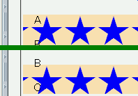
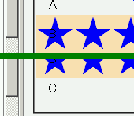

body要素以外の要素で background-attachment: fixed; による背景画像の固定を行っても、背景画像はページスクロールに合わせて動いてしまう。
<style type="text/css">
.aaa {
background-image: url(../img/img01.png);
background-repeat: repeat-x;
background-attachment: fixed;
background-position: center;
}
</style>
<div class="aaa">
<p>A</p><p>B</p><p>C</p>
</div>
A
B
C
固定した背景画像を、中央部に横一列に並べています。
スクロール前後の表示を縦に並べています。
N7.0での表示（標準モード）
WinIE6.0での表示（標準モード）
background-attachmentプロパティの指定は、'fixed' を 'scroll' が指定されたものとして扱ってもよいとされているので、仕様に反した実装ではありません。
WinIE6.0では標準・互換モードともに背景画像がスクロールに合わせて移動します。